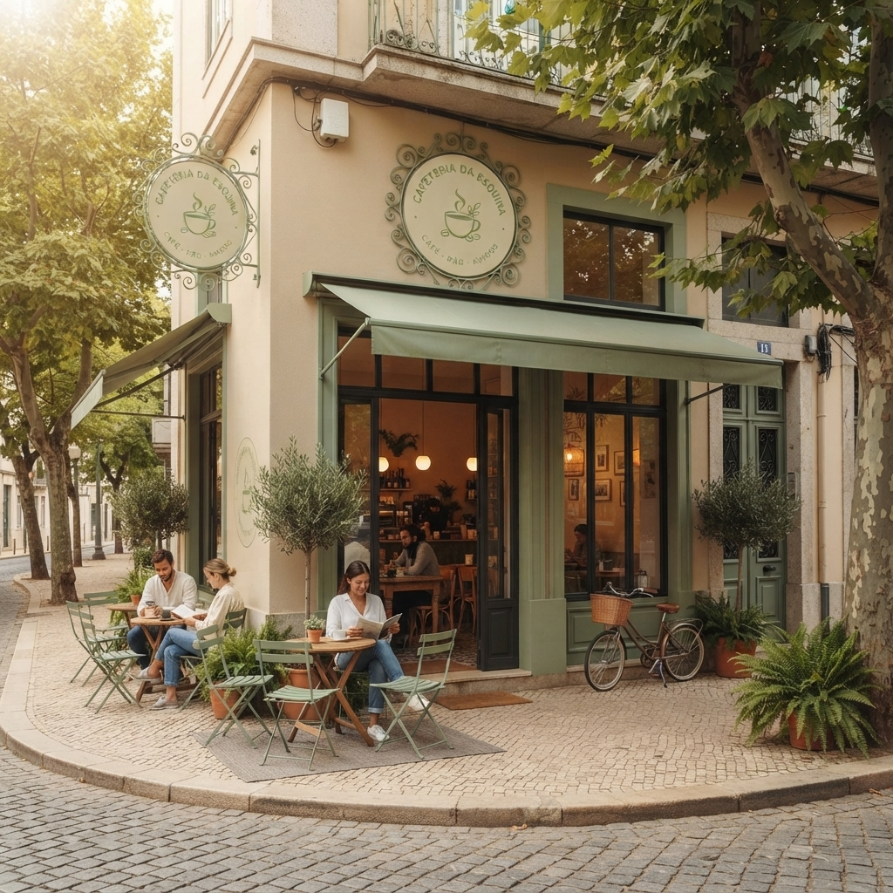

O Café da Esquina nasceu em 2019 do sonho de transformar uma pequena paixão por café
em um lugar de encontro para a comunidade. Começamos com um espaço pequeno, poucas mesas
e a vontade de servir cafés especiais acompanhados de produtos artesanais preparados com
carinho. Ao longo dos anos, nos tornamos um ponto de encontro para amigos, famílias, estudantes
e profissionais que buscam um ambiente acolhedor para trabalhar, conversar ou simplesmente apreciar
um bom café.
Hoje, o Café da Esquina continua valorizando a qualidade dos ingredientes, o atendimento próximo e a
experiência
de fazer cada cliente se sentir em casa.
